179
The Law and The Society
Observe the picture.
The picture shows friends playing ‘Kulam Kara’? Have you ever played
this game? Shall we play this game?
What are the rules of the ‘Kulam Kara’ game?
•
•
All games have certain rules.
If we fail to follow the rules of the games we are involved in, can we
continue to play?
Like this, we have to follow certain rules and guidelines for the smooth
functioning of the school. What are they?
The Law and The Society
The Law and The Society
11
11
Page 75


Page 76
180
Social Science Class V
• follow the time schedule
• wear the school uniform
What will happen if these are not followed?
Discuss in groups and prepare a chart showing rules and guidelines
to be followed in the school and present them to the class.
Social Norms
Social norms are the
unwritten
rules
of
beliefs, attitudes, and
behaviours that are considered
acceptable in a particular social
organisation or culture.
•
•
What is Law?
Just like following the rules and guidelines in school, it is essential to
follow certain rules and guidelines for the survival of the society.
Humans are social animals. Laws are essential to ensure a better life and
protection for every individual in the society. Laws are meant for the
welfare of everyone in the society.
Certain conditions and restrictions on the character, conduct, actions,
freedom, rights, etc. are essential for the members of a social group.
Public interest also needs to be considered while protecting individual
interests. In such cases, the society needs a system. The laws perform this
function.
What happens to the society if laws are not followed?
If the rules are not followed, conflicts arise. This endangers the existence
of the society. Therefore, violation of rules is punishable.
Laws are formed mainly in two ways.
Law is the accepted set of rules and regulations for the existence and
smooth functioning of the society.
• laws or rules formed through
social norms or practices
• laws formed by systematic
mechanisms
All the laws that existed in the
ancient society were formed from
norms or practices.
Generally, these were not strictly
Page 77


181
The Law and The Society
written. They were implemented in the society through social norms and
customs. Most of the rules and laws that were part of the social order
have been either changed or modified over time.
What are the laws we are familiar with in our daily lives?
• Traffic rules
• Right to Education Act
• Child Rights Act
How were these laws formed?
In the modern era, such laws which
are required for the nation are made
by the respective governments
through the state system called
legislature.
Legislatures
also
make
laws
following strong public opinion, in
addition to the laws made by the
governments on their initiative.
Judgements
of
the
court,
interpretations of the law and recommendations made by the courts
often contribute to the formation of new laws. In this way, laws are also
formulated through the interventions of the courts of law.
You have understood how the laws were formed. List out
examples of laws formed in different ways.
State
A state is a politically
organised
population
permanently residing in a
territory that is defined within the
jurisdiction of a government. The
elements of a state are population,
territory,
government,
and
sovereignty.
Parliament of India
Kerala Legislative Assembly
Page 78
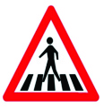
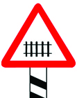
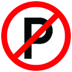
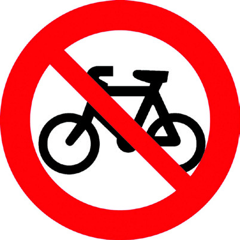
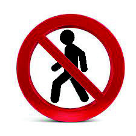
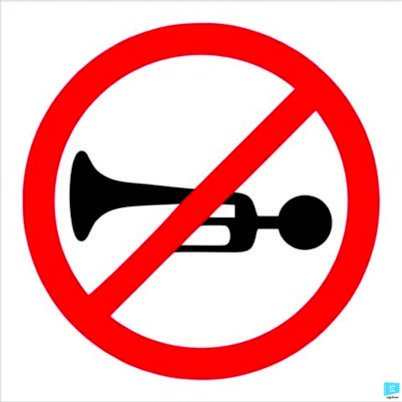
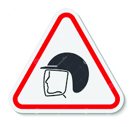
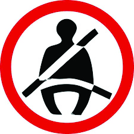
182
Social Science Class V
Observe and write the indications each of the road safety pictures shows.
(1) no cycling
(2) ....................
(3) ....................
(4) ....................
(5) ....................
(6) ....................
(7) wear seatbelts
(8) ....................
(9) ....................
It is necessary to follow the rules indicated by such signs in our day to
day life. Road safety laws are the ones formulated to make road traffic
smooth and accident-free. Pedestrians as well as motorists are obliged
Stop... Look... Proceed...
(1)
(4)
(7)
(2)
(5)
(8)
(3)
(6)
(9)
Page 79
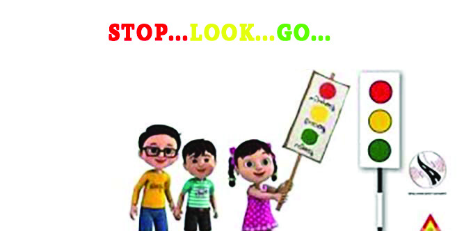
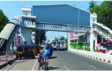
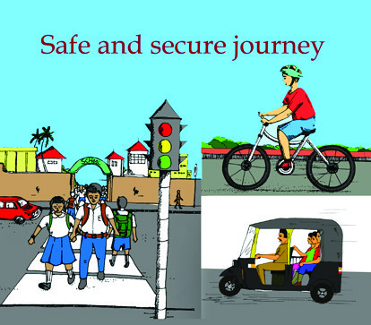
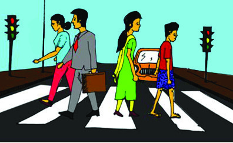

183
The Law and The Society
Prepare placards and slogans and organise a rally on Road
Safety Day to create awareness of road safety rules.
Attention Pedestrians
• In our country, vehicular traffic is on the left side of the road. If you
walk on the right side of the road, you can see the oncoming vehicles
clearly. If we walk on the left side, we can not see the vehicles coming
from behind. This increases the risk of accidents.
• If there are sidewalks, use them while walking on the road. Walk only
on the right side of the road, if there are no sidewalks.
• More than two people together should not walk on the same side of
the road.
• Do not walk through areas where
pedestrians are prohibited.
• Never walk on the road using
mobile phones and headsets.
• Cross the road only after looking
first to the right and then to the
left to make sure that there are no
vehicles. Cross the road only at
zebra crossing if there are zebra
lines.
to follow these laws. By obeying traffic rules, one can ensure one’s own
safety and the safety of others.
Page 80


184
Social Science Class V
• Wait for the green signal for pedestrians
to cross the road in areas where the traffic
signal system is there.
• If there are foot-over bridges, skywalks
and underpasses designed for pedestrians,
use them.
The Law and the Cyber World
Foreign national
arrested for cyber
fraud
Hoax
Video Call: Money
stolen disguising
as friend
Online lucky
coupon fraud :
Beware
Financial fraud
using fake social
media profile
Roleplay the instructions for pedestrian safety as different groups.
Haven’t you read the news
headlines?
Look at the number of scams
through social media. Are there
rules to regulate these?
A lot of scams take place in
internet games, mobile apps and
online services. The law enacted
Information Technology
Act 2000
This law was implemented to
ensure legal recognition and security
for transactions involving information
technology. The act stipulates strict
punishment for those involved in
cybercrimes.
Page 81
185
The Law and The Society
Laws
Purpose
• Right to Information
Act (2005)
• Ensure the right of the public to avail
information.
•
•
•
•
Find the laws you are familiar with and complete the table
to get protection from such situations is the ‘Information Technology Act
2000.’ Similarly, various laws exist for the safety of people.
Violation of Child Labour
Act: Hotel Owner is Booked
Right to Education Act is in
Force
Child Marriage Prohibition
Act Comes into Force
Dip in Crimes Against
Children After Juvenile
Justice Act: Survey Report
Traffic laws, cyber laws, etc. are aimed at the general safety of the society.
However, some laws are there for the protection of certain sections of the
people.
Children and Their Rights
Look at the news collage. Which are the laws that are referred to here?
• Child Labour Prohibition Act
•
A safe and secure childhood is the right of every child. Our constitution
guarantees certain rights to children for their safety. Besides, many laws
and mechanisms are in place to protect child rights.
Child Labour Prohibition Act, 1986
Employing children under the age of 14 is an offence.
Page 82


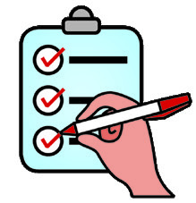
186
Social Science Class V
November 20
World Child Rights Day
June 12 is Anti-Child Labour Day
Child Helpline Number: 1098
Juvenile Justice Act, 2015
The Juvenile Justice Act has been in force since 2015
to ensure a safe and secure childhood. According to this
law harassing and neglecting children, making them beg, forced
labour, giving them drugs and using them for drug peddling
are punishable. In case of such a violation of rights, the State Child Rights
Protection Commission shall be approached.
Prepare a speech to be delivered in the ‘Balasabha’ regarding
the rights of children.
Right to Education Act, 2009
Free and compulsory primary education is guaranteed to children
between the age of 6 to 14.
Commission for Protection of Child Rights
The National Commission for Protection of Child Rights and the State
Commission for Protection of Child Rights are functioning at the
national and state levels respectively to protect the rights of children.
JUNE 12
Page 83
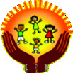
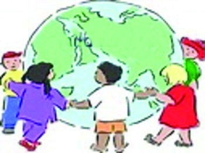
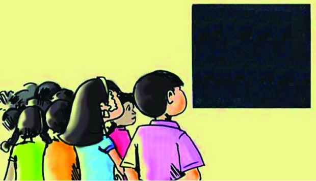


187
The Law and The Society
POCSO Act, 2012
(Protection of Children from Sexual Offences Act, 2012)
The POCSO Act (Protection of Children
from Sexual Offenses Act, 2012) is a law that
has been enacted to protect children from sexual assault
regardless of gender. Government of India implemented
this act by accepting the recommendations of the United
Nations Convention on the Rights of Children in 1989.
Prepare posters that spread the message of child rights.
.Child Rights
Right to
Education
Act
Rule of Law
We are now familiar with different laws. Our social life proceeds
smoothly as we obey these rules. All citizens are equal before the law.
The rule of law is a state of living subject to the equality of protection
ensured by law.
Dispute Resolution Mechanisms
Whom do you approach for redressal measures in case of any violation
of rules in your school?
•
•
Which are the agencies we approach to ensure the rule of law and find
solutions to the instances of disputes and conflicts in the society?
• Local Self-Government Vigilant Committees
•
•
Page 84

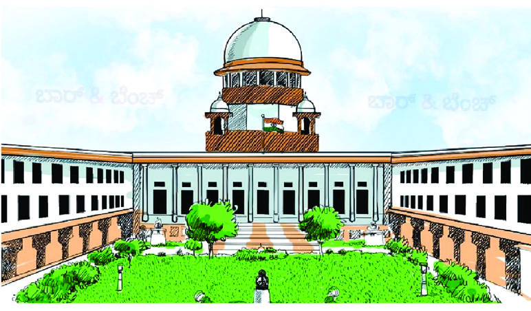
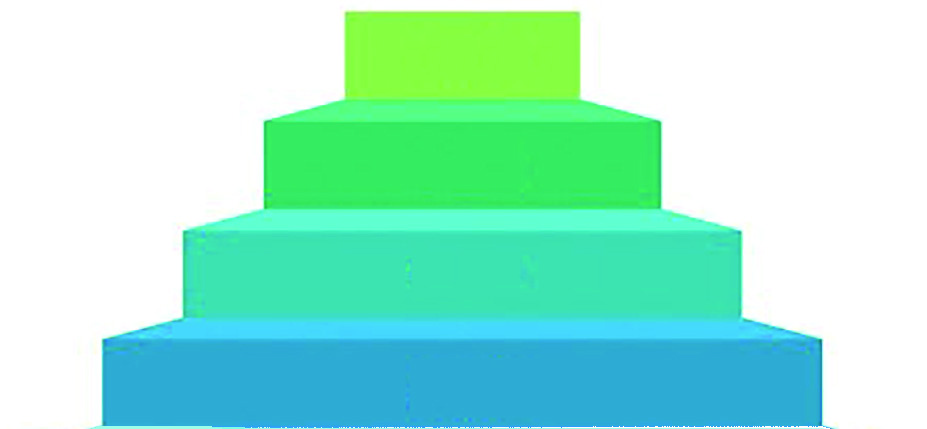
188
Social Science Class V
The duty of police is to maintain law and order. Courts have the power
to resolve disputes and impose penalties/punishments.
Observe the details about the courts given below.
High Court of Kerala
Supreme Court
The Supreme Court is the highest
court of law in India. It is located in
New Delhi.
The High Court is the highest court
of law in the state. The Kerala High
Court is located at Ernakulam.
The Supreme
Court
High Courts
District Courts
Sessions Courts
The chief duty of the courts is to ensure the supreme power of law. We
can have a smooth social life as we follow the rules. It is the duty of each
of us to recognise this and act accordingly.
Apart from the Supreme Court and High Courts, various types of courts
are functioning in our country.
Observe the hierarchy of courts..
Page 85

189
The Law and The Society
1. Observe Road Safety Week under the auspices of the Social Science
Club.
2. Organise class-level interviews with childline workers.
3. Make class-level rules with the help of the teacher.
4. Visit the nearby police station, observe the activities there and
prepare a note.
5. Observe the Local Self-Government Vigilant Committees and
prepare an observation report on their dispute resolution
mechanisms.
6. Organise a seminar on the topic, ‘Traps in the Cyberspace. ‘ Make
use of the services of experts.
Extended Activities
Conduct an interview with legal experts, gather information
about the laws concerning children and prepare notes.
Page 86
.................................................................................................................................................................
.................................................................................................................................................................
.................................................................................................................................................................
.................................................................................................................................................................
.................................................................................................................................................................
.................................................................................................................................................................
.................................................................................................................................................................
.................................................................................................................................................................
.................................................................................................................................................................
.................................................................................................................................................................
.................................................................................................................................................................
.................................................................................................................................................................
.................................................................................................................................................................
.................................................................................................................................................................
.................................................................................................................................................................
.................................................................................................................................................................
.................................................................................................................................................................
.................................................................................................................................................................
.................................................................................................................................................................
.................................................................................................................................................................
.................................................................................................................................................................
.................................................................................................................................................................
.................................................................................................................................................................
.................................................................................................................................................................
Notes
Page 87
Page 88